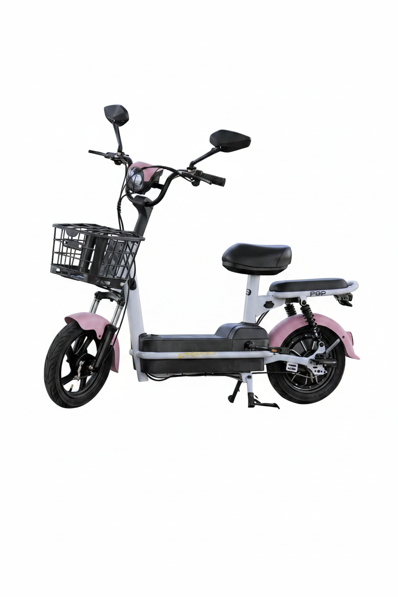

Mobilidade
no seu ritmo.
Uma ideia de catálogo para conhecer as opções elétricas com calma e levar a conversa certa para a equipe.

FOTO: EFLOW / REFERÊNCIA EXTERNAMOBILIDADEELÉTRICA
Qual combina
com você?
A página pode organizar diferentes tipos de mobilidade elétrica. Marcos confirmou bicicletas elétricas; as outras categorias e todas as marcas e modelos desta prévia são referências para validar com a Pro Bike.
Fotos reais de produtos EFLOW exibidas como referências visuais, obtidas no site do fabricante. Não representam modelos confirmados da Pro Bike. A conversa confirmou bicicletas elétricas; scooters e triciclos aparecem apenas para mostrar outras categorias que poderiam ser organizadas, caso a loja também trabalhe com elas. Produtos, fotos autorizadas, especificações, preços e estoque precisam ser confirmados.
NO SEU TEMPO
Olhe com calma.
Converse com a loja.
Busca, filtro e comparação ajudam a entender as opções. A equipe confirma o que está disponível e orienta cada escolha.
Uma boa pergunta
abre caminho.
A prévia ainda não é uma página oficial. O catálogo real pode entrar quando modelos, fotos e informações forem confirmados.